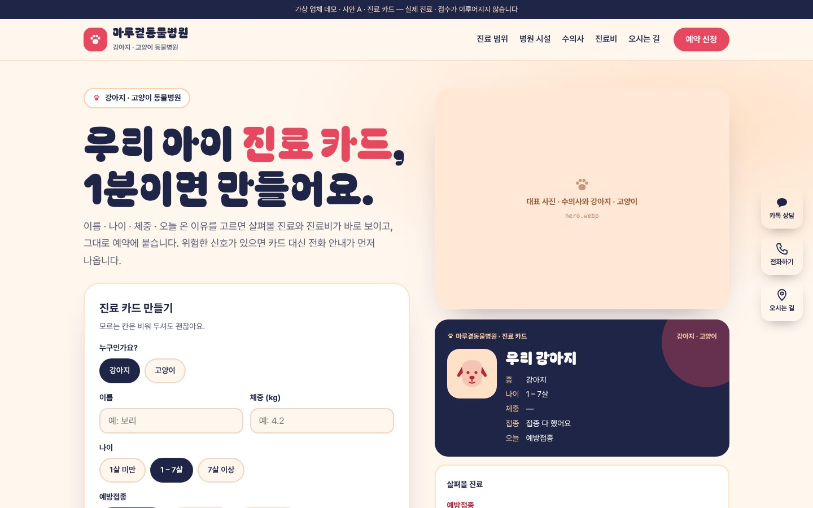
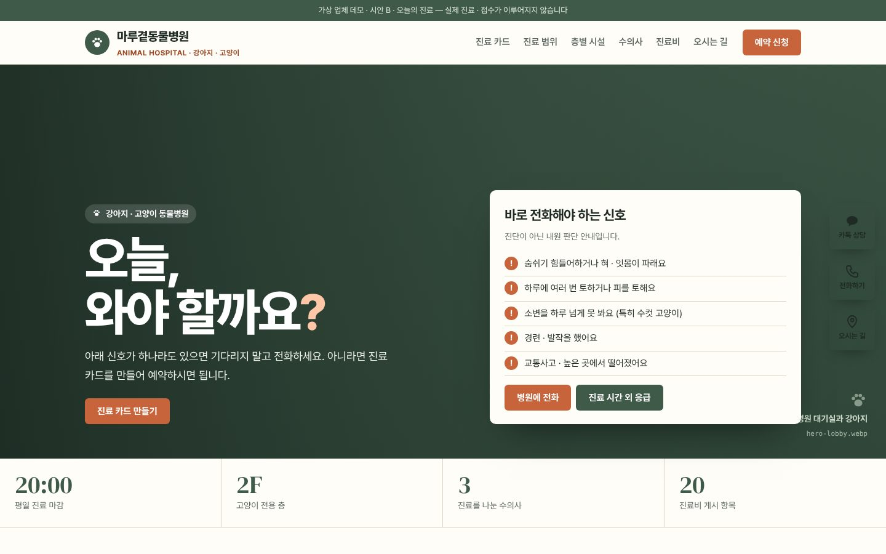
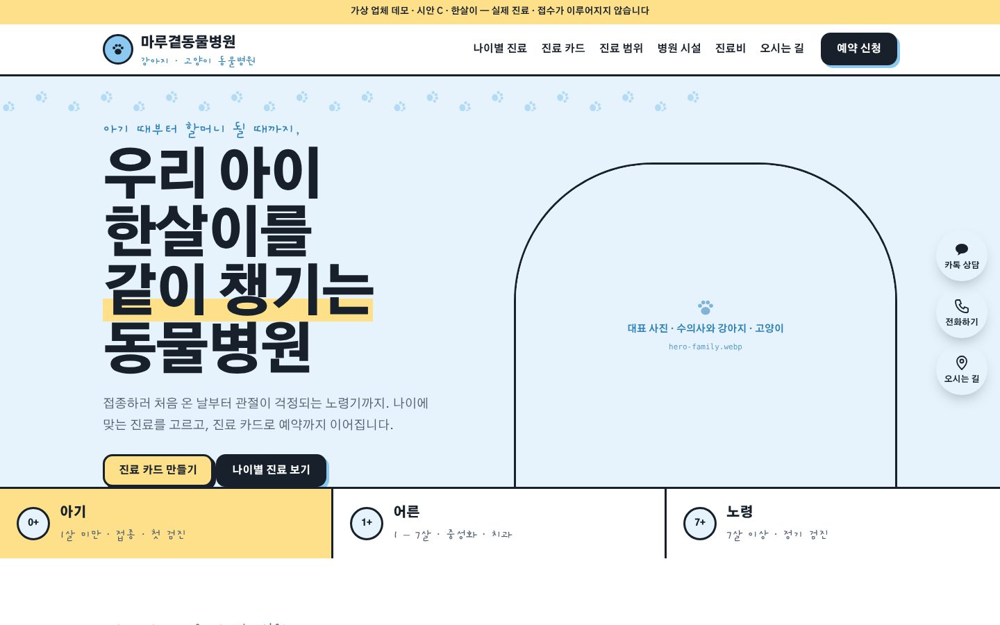

조합 1 선택 반영(이슈 #115) · 가상 업체 데모 · 2026-10-31
같은 진료 카드,
세 가지 다른 동물병원.
세 시안 모두 우리 아이 카드로 시작하는 진료 준비형입니다. 강아지 · 고양이, 이름 · 나이 · 체중 · 접종 · 오늘 온 이유를 고르면 살펴볼 진료와 관련 진료비(게시 항목 · 예시 금액)가 나오고 그대로 예약 신청(L2)에 붙습니다. 응급 신호를 고르면 카드 대신 "지금 바로 전화하세요" 안내로 바뀝니다.
요청 반영: 로고 · 첫 화면 · 카드에 발바닥 · 강아지 · 고양이를 넣어 동물병원임이 바로 보이게 했고, 레퍼런스처럼 병원 시설 9곳 · 진료 범위 8가지 · 수의사 3명 · 대표 사진 칸을 만들었습니다. 사진 제작 지침(26장)대로 GPT로 만들어 images/에 같은 이름으로 넣으면 세 시안에 바로 표시됩니다. 바로가기(카톡 · 전화 · 오시는 길)는 웹 오른쪽 · 모바일 하단입니다.

A · 진료 카드 · 추천
피치 · 코럴 · 네이비. 첫 화면에서 바로 카드를 만들고 오른쪽에 남색 진료 카드가 완성되는 분할형. 진료 범위 사진 카드 8개, 시설은 옆으로 넘기는 사진 띠.
시안 열기 →

B · 오늘의 진료
세이지 · 크림 · 테라코타. 대기실 사진을 가득 깔고 "오늘, 와야 할까요?" 응급 신호부터 보여 줍니다. 진료 범위는 크기가 다른 사진 타일, 시설은 1층 · 2층 층별 안내.
시안 열기 →

C · 한살이
하늘 · 버터 · 먹. 아기 · 어른 · 노령 탭으로 나이별 진료를 고르면 진료 카드 나이도 함께 바뀝니다. 손글씨 메모와 굵은 테두리의 다정한 그림책 톤.
시안 열기 →
디자인 지문
| 시안 | layout | hero | typePair | palette | signature |
|---|
| A · petcard | split (카드 만들기 · 완성 카드) | interactive pet ID card + photo | Bagel Fat One + Pretendard | cream · peach · coral · navy | 진료 카드 → 응급 신호면 전화 안내로 전환 |
| B · checkup | bento mosaic + floor guide | fullbleed photo + emergency panel | Pretendard + DM Serif Display(숫자) | sage · cream · terracotta | "오늘 와야 할까요?" 신호 패널 · 진료비 항목 찾기 |
| C · lifestage | story (나이별 탭 · 굵은 테두리) | statement + arch photo + stage tabs | Gaegu + Gothic A1 | sky · butter · ink | 아기 · 어른 · 노령 탭 → 카드 나이 연동 |
병원명 · 수의사 · 주소 · 진료비는 예시이며 사진은 AI 생성 예시로 표기합니다. '전문의' · 최고 · 완치 · 할인 표현은 쓰지 않았고, 진료마다 주의를 적었습니다. 진료비는 수의사법 게시 20개 항목 형식, 수술은 설명 · 서면 동의 · 예상 비용 고지 절차를 안내합니다(rules/medical.md). 예약 폼은 접수하지 않는 데모입니다.
완성할 시안 선택
레퍼런스 비교 보고서 ↗ · 사진 제작 지침 ↗ · 제출한 조합 보기 ↗